Le nostre Giornate in Foto
Our Days in Photos
Unsere Tage in Bildern
Nos Journées en Photos
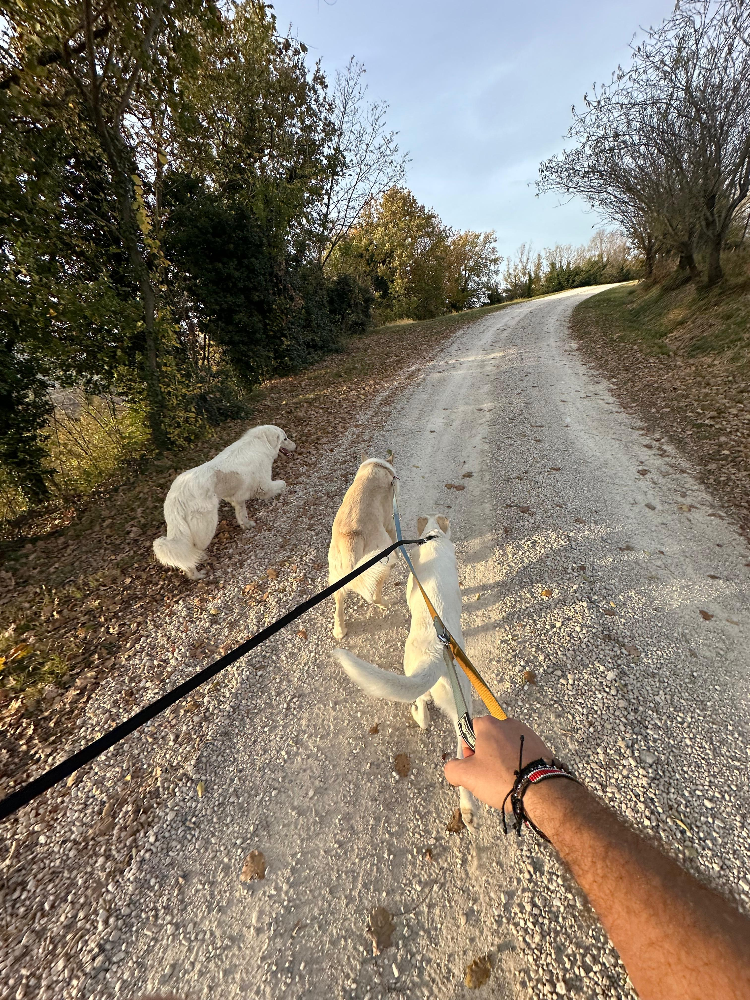

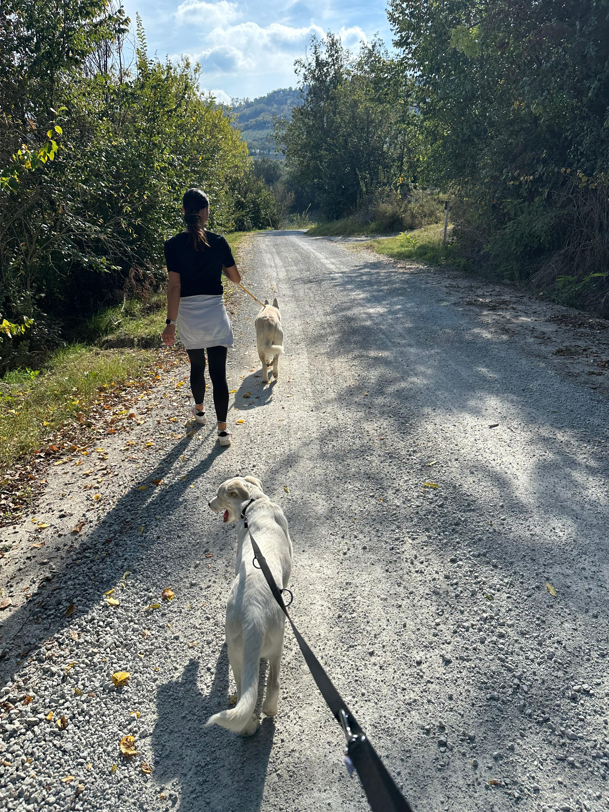

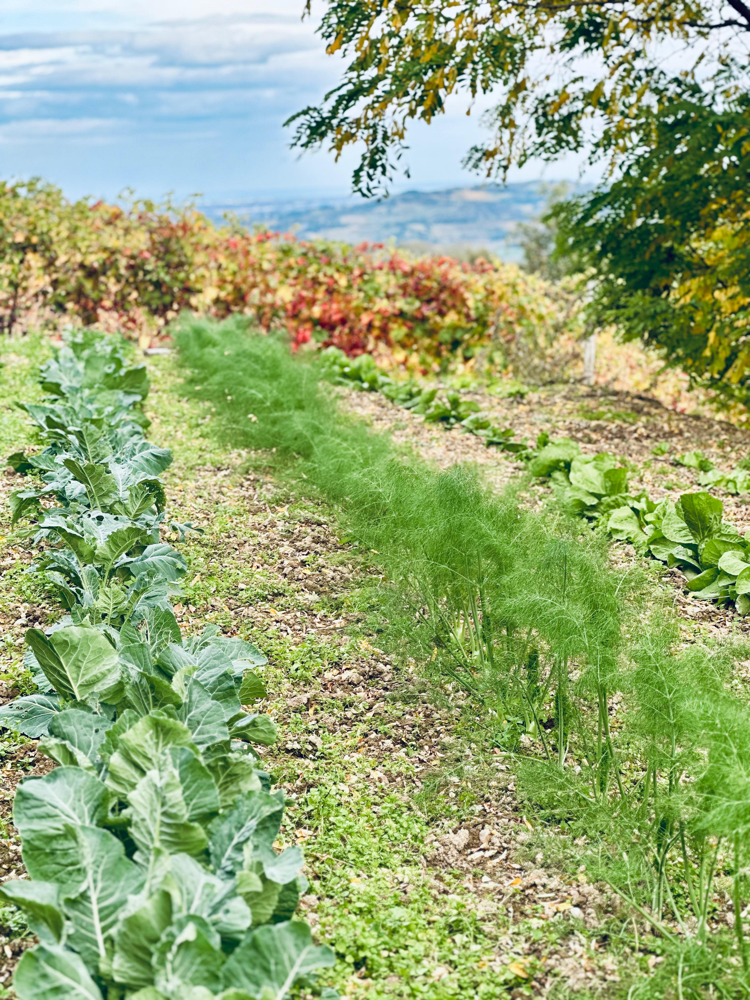
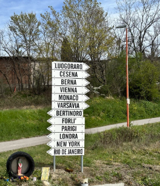
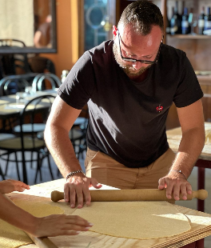
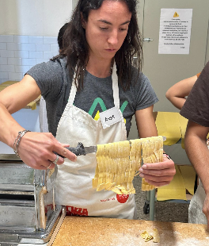
Trekking nei calanchi, cucina romagnola, vigneto, orto biologico e animali nella Valle del Sorsa. Tutto gratuito, di provvidenza. A pochi chilometri dal mare.
Trekking in the badlands, Romagna cooking, vineyard, organic garden and animals in the Sorsa Valley. Completely free, by providence. A few km from the sea.
Wandern in den Calanchi, Romagna-Küche, Weinberg, Bio-Garten und Tiere im Sorsa-Tal. Völlig kostenlos, aus Vorsehung. Wenige km vom Meer entfernt.
Randonnée dans les calanchi, cuisine romagnole, vignoble, jardin bio et animaux dans la Vallée du Sorsa. Entièrement gratuit, par providence. À quelques km de la mer.
Experience Romagna è un progetto di Peace and Good People ODV, un'associazione di volontariato che opera di provvidenza. Tutte le esperienze sono completamente gratuite. Non esiste un listino prezzi, non c'è un biglietto da pagare. Chi vuole, può scegliere liberamente di fare una donazione per sostenere la nostra missione.
Experience Romagna is a project of Peace and Good People ODV, a volunteer association that operates by providence. All experiences are completely free. There is no price list, no ticket to buy. Those who wish can freely choose to donate to support our mission.
Experience Romagna ist ein Projekt von Peace and Good People ODV, einem Freiwilligenverein, der aus Vorsehung arbeitet. Alle Erlebnisse sind völlig kostenlos. Es gibt keine Preisliste, keine Eintrittskarte. Wer möchte, kann frei wählen, unsere Mission zu unterstützen.
Experience Romagna est un projet de Peace and Good People ODV, une association bénévole qui fonctionne par providence. Toutes les expériences sont entièrement gratuites. Il n'y a pas de liste de prix, pas de billet à acheter. Ceux qui le souhaitent peuvent librement choisir de faire un don.
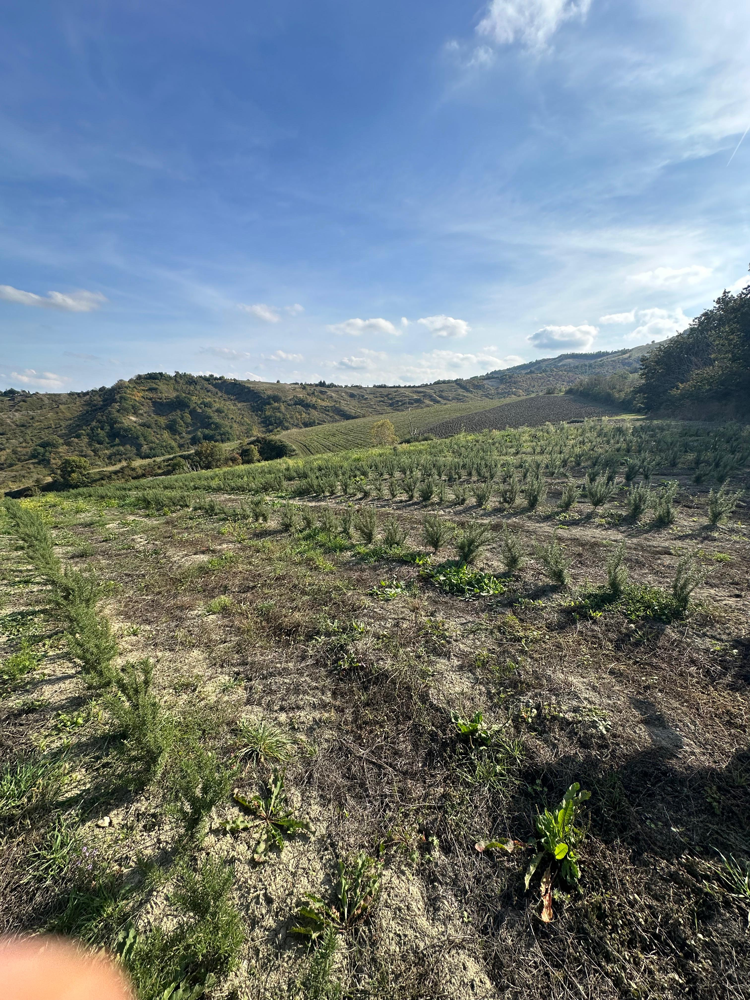
A pochi chilometri dalla Riviera Romagnola, nella dolce campagna di Cesena, si apre un mondo rimasto autentico. La Valle del Sorsa è un angolo di Romagna profonda: calanchi, vigneti di Sangiovese, oliveti, orti biologici, chiese romaniche e sentieri che profumano di timo.
A few kilometers from the Romagna Riviera, in the gentle countryside of Cesena, a world that has remained authentic opens up. The Sorsa Valley is a corner of deep Romagna: badlands, Sangiovese vineyards, olive groves, organic gardens, Romanesque churches and paths that smell of thyme.
Wenige Kilometer von der Romagna Riviera entfernt, in der sanften Landschaft von Cesena, öffnet sich eine Welt, die authentisch geblieben ist. Das Sorsa-Tal ist eine Ecke des tiefen Romagna: Calanchi, Sangiovese-Weinberge, Olivenhaine, Bio-Gärten, romanische Kirchen und Pfade, die nach Thymian duften.
À quelques kilomètres de la Riviera de Romagne, dans la douce campagne de Cesena, s'ouvre un monde resté authentique. La Vallée du Sorsa est un coin de Romagne profonde : calanchi, vignobles de Sangiovese, oliveraies, jardins biologiques, églises romanes et sentiers qui sentent le thym.
Qui non troverai un agriturismo turistico. Troverai una famiglia, un orto vero, un vino vero, dei cani felici e persone che credono che la bellezza della vita si condivide — gratuitamente.
Here you won't find a tourist farmhouse. You'll find a family, a real garden, real wine, happy dogs and people who believe that the beauty of life is shared — for free.
Hier finden Sie keinen touristischen Bauernhof. Sie finden eine Familie, einen echten Garten, echten Wein, glückliche Hunde und Menschen, die glauben, dass die Schönheit des Lebens geteilt wird — kostenlos.
Ici, vous ne trouverez pas une ferme touristique. Vous trouverez une famille, un vrai jardin, un vrai vin, des chiens heureux et des personnes qui croient que la beauté de la vie se partage — gratuitement.
Vedi tutti i percorsi → See all trails → Alle Wege sehen → Voir tous les parcours →Non siamo soli. Abbiamo una famiglia a quattro zampe che ti accoglierà con tutto il calore del mondo.
We are not alone. We have a four-legged family that will welcome you with all the warmth in the world.
Wir sind nicht allein. Wir haben eine vierbeinige Familie, die Sie mit aller Wärme der Welt empfangen wird.
Nous ne sommes pas seuls. Nous avons une famille à quatre pattes qui vous accueillera avec toute la chaleur du monde.
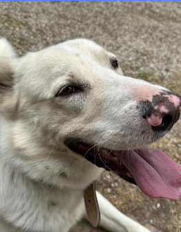
Direttore del Benvenuto. Bianco, soffice, innamorato di tutti. Sarà il primo ad accoglierti e l'ultimo a lasciarti andare.
Director of Welcoming. White, fluffy, in love with everyone. He'll be the first to greet you and the last to let you go.
Begrüßungsdirektor. Weiß, flauschig, in jeden verliebt. Er wird der erste sein, der Sie begrüßt und der letzte, der Sie gehen lässt.
Directeur de l'Accueil. Blanc, moelleux, amoureux de tout le monde. Il sera le premier à vous accueillir et le dernier à vous laisser partir.
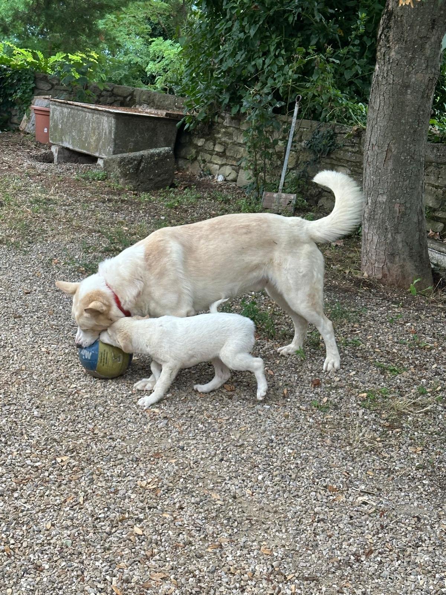
Figlia di Happy. Incrocio con una maremmana bianca. Energica, curiosa, ama i sentieri e le avventure. In cammino sui calanchi con lei è un'esperienza indimenticabile.
Happy's daughter. Crossed with a white Maremma sheepdog. Energetic, curious, loves trails and adventures. Walking in the badlands with her is an unforgettable experience.
Happys Tochter. Kreuzung mit einem weißen Maremma-Schäferhund. Energisch, neugierig, liebt Wege und Abenteuer. Mit ihr in den Calanchi zu wandern ist ein unvergessliches Erlebnis.
La fille d'Happy. Croisée avec un chien de berger des Maremmes blanc. Énergique, curieuse, elle adore les sentiers et les aventures. Se promener dans les calanchi avec elle est une expérience inoubliable.
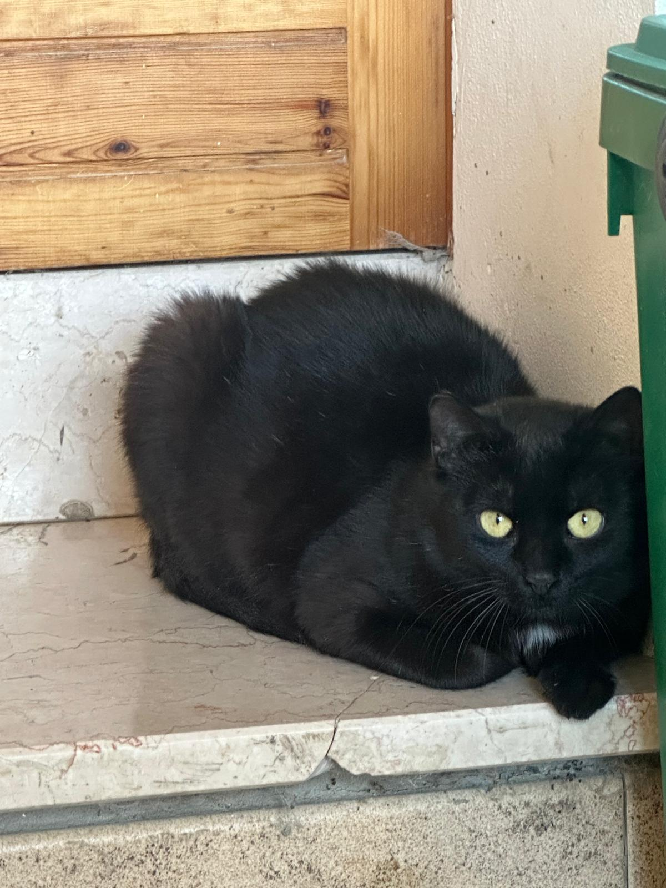
La filosofa nera. Occhi gialli sorprendenti, carattere riservato ma curioso. Si lascia avvicinare quando decide lei. Un incontro speciale.
The black philosopher. Surprising yellow eyes, reserved but curious character. She lets you approach when she decides. A special encounter.
Die schwarze Philosophin. Überraschende gelbe Augen, reservierter aber neugieriger Charakter. Sie lässt sich nähern, wenn sie es entscheidet. Eine besondere Begegnung.
La philosophe noire. Yeux jaunes surprenants, caractère réservé mais curieux. Elle se laisse approcher quand elle le décide. Une rencontre spéciale.
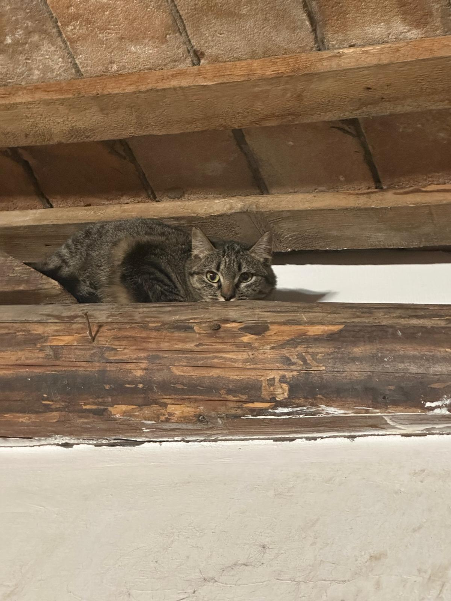
La guardiana del fienile. Tigrata, saggia, preferisce osservare dall'alto. Regna indisturbata tra i travi della sua torre personale.
The barn guardian. Tabby, wise, prefers to observe from above. She reigns undisturbed among the beams of her personal tower.
Die Scheunen-Wächterin. Getigert, weise, beobachtet lieber von oben. Sie herrscht ungestört zwischen den Balken ihres persönlichen Turms.
La gardienne de la grange. Tigrée, sage, préfère observer d'en haut. Elle règne sans être dérangée parmi les poutres de sa tour personnelle.
Scrivici su WhatsApp o via email. Parliamo della tua giornata ideale, del tuo gruppo, delle tue preferenze.
Write to us on WhatsApp or email. Let's talk about your ideal day, your group, your preferences.
Schreib uns auf WhatsApp oder per E-Mail. Lass uns über deinen idealen Tag sprechen.
Écrivez-nous sur WhatsApp ou par email. Parlons de votre journée idéale, de votre groupe.
Su richiesta organizziamo il trasporto da Cesenatico, Cervia, Pinarella, Bellaria e Cesena. Il relax inizia subito.
On request we organize transport from Cesenatico, Cervia, Pinarella, Bellaria and Cesena. Relaxation starts right away.
Auf Anfrage organisieren wir den Transport von Cesenatico, Cervia, Pinarella, Bellaria und Cesena.
Sur demande, nous organisons le transport depuis Cesenatico, Cervia, Pinarella, Bellaria et Cesena.
Arrivi e trovi vino, stuzzichini locali e tutta la famiglia — umana e a quattro zampe — pronta ad accoglierti.
You arrive to find wine, local snacks and the whole family — human and four-legged — ready to welcome you.
Sie kommen an und finden Wein, lokale Snacks und die ganze Familie — menschlich und vierbeinig — bereit, Sie zu empfangen.
Vous arrivez et trouvez du vin, des amuse-bouches locaux et toute la famille — humaine et à quatre pattes — prête à vous accueillir.
Scegli tra trekking, vigneto, cucina, orto, trattore, chiese… o lasciati sorprendere. Ogni giornata è unica.
Choose from trekking, vineyard, cooking, garden, tractor, churches… or let yourself be surprised. Every day is unique.
Wählen Sie zwischen Wandern, Weinberg, Kochen, Garten, Traktor, Kirchen… oder lassen Sie sich überraschen. Jeder Tag ist einzigartig.
Choisissez entre randonnée, vignoble, cuisine, jardin, tracteur, églises… ou laissez-vous surprendre. Chaque journée est unique.
Il gran finale: ci sediamo tutti insieme e mangiamo quello che abbiamo cucinato. Vino, risate, e ricordi per sempre.
The grand finale: we all sit together and eat what we cooked. Wine, laughter and memories forever.
Das große Finale: Wir sitzen alle zusammen und essen, was wir gekocht haben. Wein, Gelächter und Erinnerungen für immer.
Le grand final : nous nous asseyons tous ensemble et mangeons ce que nous avons cuisiné. Vin, rires et souvenirs pour toujours.






Sei in vacanza al mare? Nessun problema. Organizziamo il trasporto su richiesta dalla Riviera Romagnola alla Valle del Sorsa. Un'ora di auto e sei in un altro mondo.
On holiday at the sea? No problem. We organize transport on request from the Romagna Riviera to the Sorsa Valley. One hour by car and you're in another world.
Im Urlaub am Meer? Kein Problem. Wir organisieren Transport auf Anfrage von der Romagna Riviera zum Sorsa-Tal. Eine Stunde Fahrt und Sie sind in einer anderen Welt.
En vacances à la mer ? Pas de problème. Nous organisons le transport sur demande de la Riviera de Romagne à la Vallée du Sorsa. Une heure de voiture et vous êtes dans un autre monde.
"Every Day is A Good Day if you visit Romagna"— Tom, 6 years old ⭐
Non aspettare. Scrivici su WhatsApp e costruiamo insieme la tua giornata perfetta nella Valle del Sorsa.
Don't wait. Write to us on WhatsApp and let's build your perfect day in the Sorsa Valley together.
Warte nicht. Schreib uns auf WhatsApp und lass uns zusammen deinen perfekten Tag im Sorsa-Tal gestalten.
N'attendez pas. Écrivez-nous sur WhatsApp et construisons ensemble votre journée parfaite dans la Vallée du Sorsa.